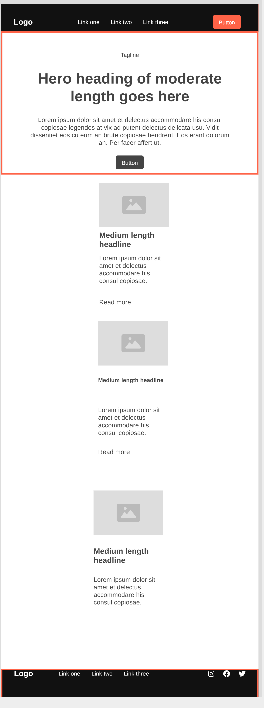
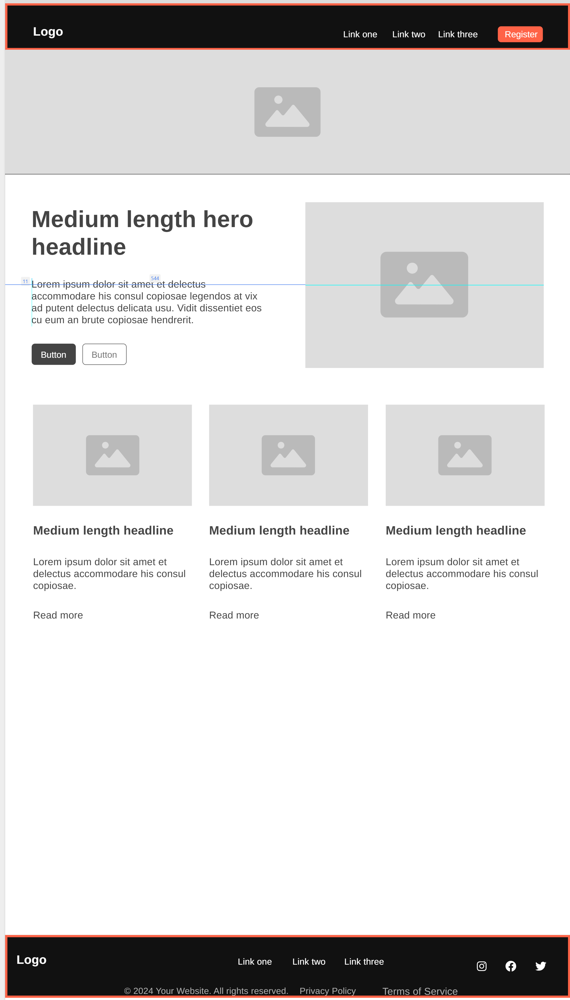

Name: Friday Night Sports Hub
Reason: This name reflects the weekly sports gatherings and the purpose of the website as a hub for players to track games, scores, and attendance.
The website will serve as a digital hub for tracking player attendance, game schedules, scores, and assists. It will also allow new players to register and join the group.
Primary Color: Black - Used for headers and navigation.
Secondary Color: White - Used for backgrounds and content sections.
Accent Color: Orange (#df7318ff) - Used for decorative elements like borders.
Heading Font: Montserrat - Used for all main headings.
Body Font: Open Sans - Used for paragraphs and general content.
Below are rough sketches of the homepage wireframe for mobile and desktop views.
 